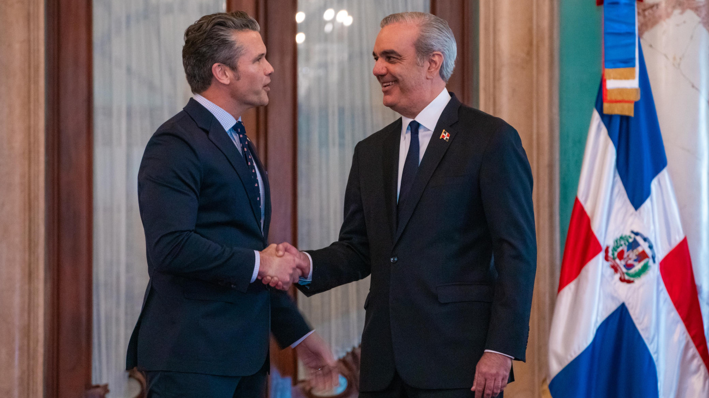
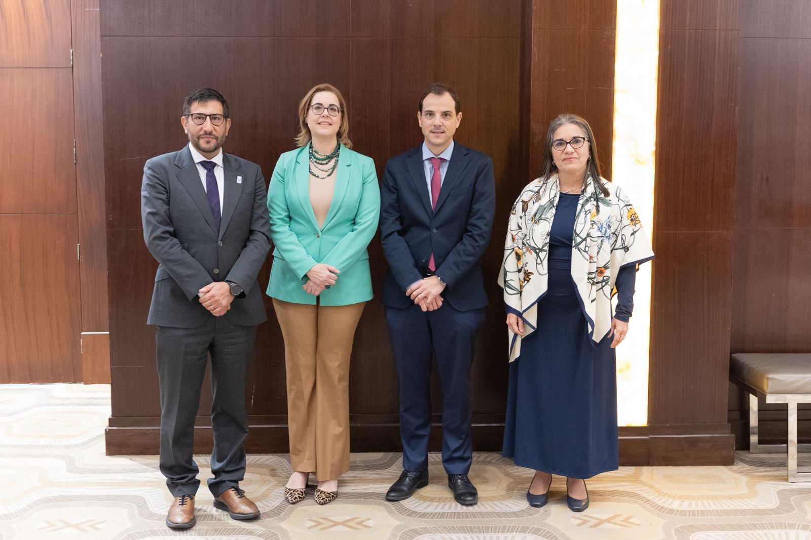
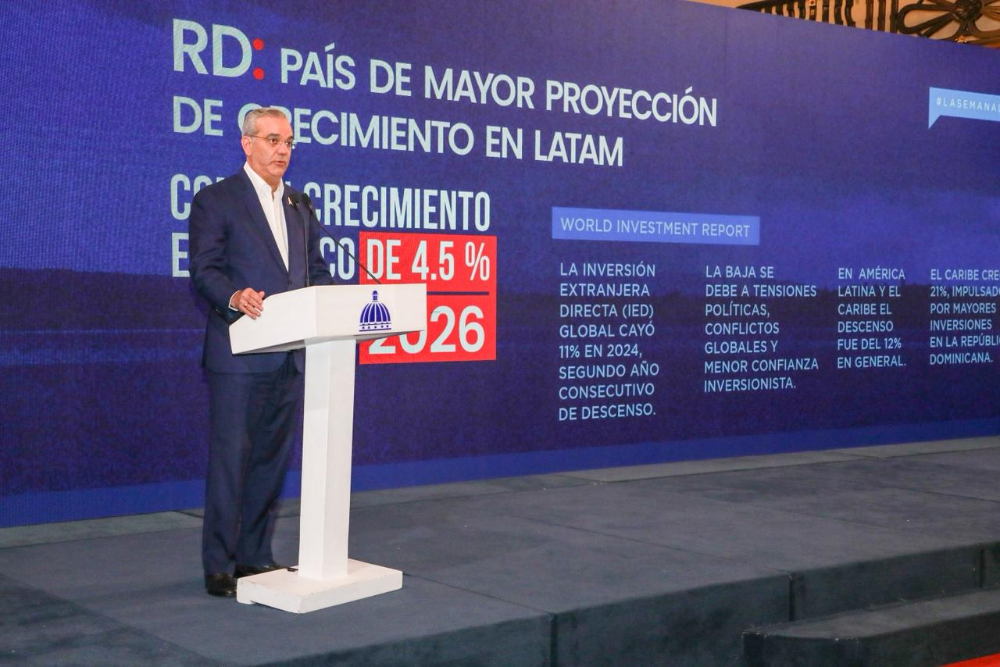
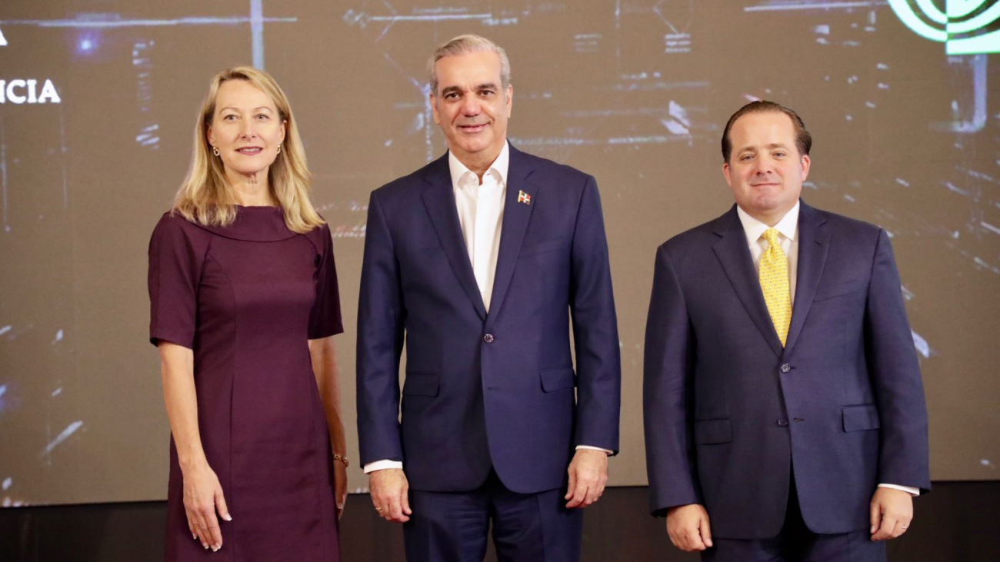
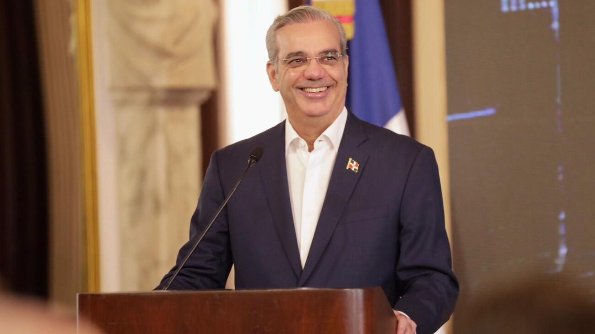
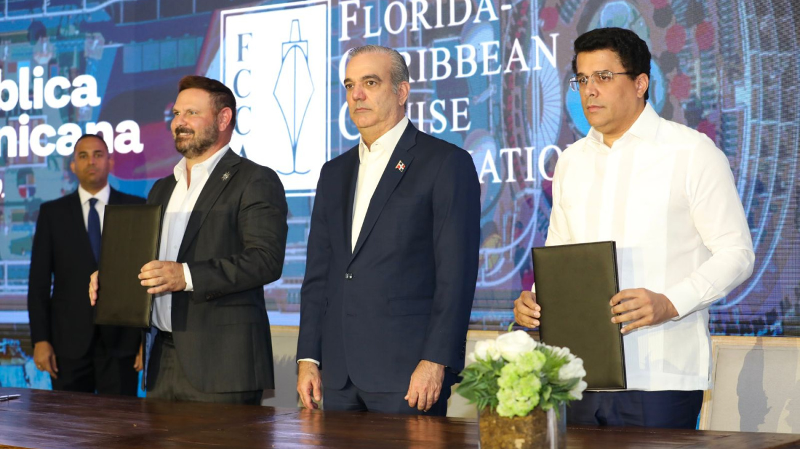
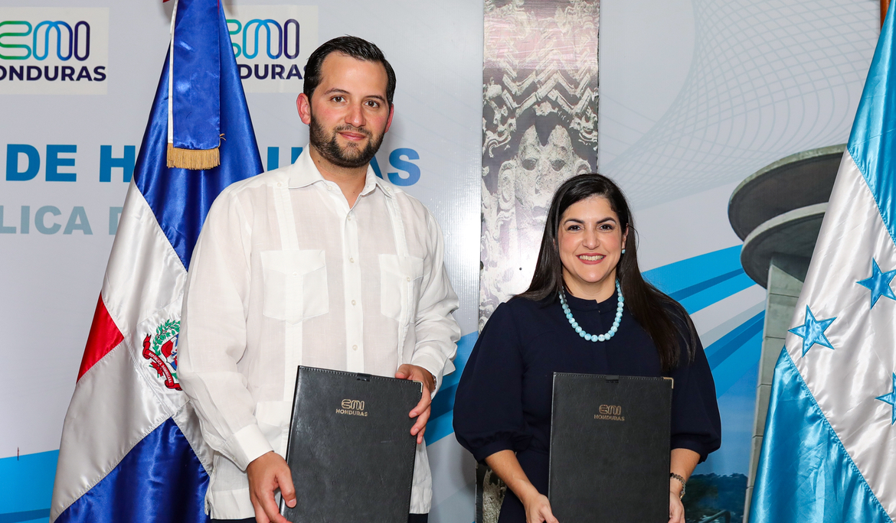
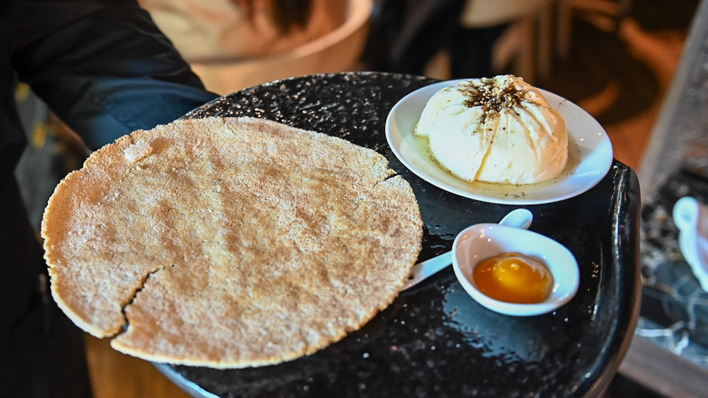

El Secretario de Defensa de EE. UU., Pete Hegseth, reafirmó el respaldo de su país a la República Dominicana y destacó el liderazgo del presidente Abinader en la lucha contra el narcotráfico.

Santo Domingo. El secretario de Defensa de los Estados Unidos, Pete Hegseth, afirmó, durante su visita al Palacio Nacional, que el Gobierno de su país “vino a apoyar a su principal aliado en la lucha contra las drogas y la inseguridad en la región”, reconociendo el rol estratégico de la República Dominicana.
El alto funcionario destacó que “la República Dominicana y el presidente Luis Abinader son el líder regional contra el narcotráfico”, subrayando que los avances obtenidos en los últimos años son resultado de una cooperación efectiva y de una voluntad firme del Gobierno dominicano para enfrentar el crimen transnacional.
Meta RD 2036 y PNUD Impulsan Diálogo de Alto Nivel Sobre Desarrollo Sostenible En Las Prioridades Nacionales

Santo Domingo, septiembre 2025. La Comisión Meta RD 2036 y el Programa de las Naciones Unidas para el Desarrollo (PNUD) llevaron a cabo un Diálogo de Alto Nivel orientado a integrar la visión de desarrollo humano sostenible en los planes estratégicos y prioridades nacionales de desarrollo.
El encuentro reunió a líderes empresariales, representantes del sector público, coordinadores de los comités sectoriales de la Meta RD 2036 y asociaciones de la sociedad civil, quienes compartieron propuestas y experiencias para avanzar hacia un futuro más competitivo, inclusivo y sostenible en la República Dominicana.
Presidente Abinader destaca República Dominicana se consolida como epicentro de confianza e inversión en América Latina

La directora de ProDominicana, Biviana Riveiro, resaltó que a nivel internacional, la República Dominicana representa la marca país más valiosa de Centroamérica, según el Global Soft Power Index, 2025, y es el primer destino de proyectos de IED en energía renovable y turismo en la región, de acuerdo con fDi Markets, 2024.
Además, ha sido reconocida internacionalmente por tener el mejor desempeño en índices de combate a la corrupción en los últimos cinco años en la región, así lo informó Transparencia Internacional en 2024; también se reconoce su liderazgo en recuperación turística a nivel global (ONU Turismo, 2022).
Gobierno de la República Dominicana acelerará sus planes soberanos de inteligencia artificial con el apoyo de NVIDIA

Santo Domingo.- El Gobierno de la República Dominicana, a través del Ministerio de la Presidencia, y NVIDIA, líder mundial en computación acelerada e inteligencia artificial, firmaron hoy un memorando de entendimiento para colaborar en la implementación de la Estrategia Nacional de Inteligencia Artificial (ENIA) y fortalecer la visión del país de convertirse en un centro regional de tecnología e inteligencia artificial.
Esta iniciativa tiene como objetivo establecer un marco estratégico enfocado en promover la soberanía tecnológica y de datos, al tiempo que impulsa la innovación en sectores prioritarios como la salud, la educación, el transporte, la seguridad pública, las finanzas y el turismo.
Presidente Abinader presenta logros que consolidan RD como hub aéreo y logístico a nivel regional
El presidente Luis Abinader presentó este lunes la transformación y crecimiento de la aviación civil dominicana hasta alcanzar hitos sin precedentes en seguridad operacional, modernización de aeropuertos, digitalización de procesos y expansión de su conectividad internacional, consolidándose como un hub aéreo y logístico estratégico en la región.
Además, gracias a la política de Cielos Abiertos, el país es el segundo con mayor índice de conectividad aérea en toda Latinoamérica, al haber pasado de 878 a 1,096 rutas aéreas operadas entre 2020 y 2025.
Presidente Abinader: Con este acuerdo nace el Centro de Excelencia en Inteligencia Artificial (CEIA), espacio para la formación, investigación e innovación tecnológica

La República Dominicana dio este martes un paso trascendental en su transformación tecnológica con la firma de un memorando de entendimiento (MOU) entre el Gobierno dominicano y NVIDIA, empresa líder mundial en inteligencia artificial (IA) y computación acelerada.
Durante el acto de firma, celebrado en el Salón Las Cariátides del Palacio Nacional, el presidente Luis Abinader dijo que con este acuerdo nace el Centro de Excelencia en Inteligencia Artificial (CEIA), espacio para estudiantes, investigadores y emprendedores dedicado a la formación, investigación e innovación tecnológica en el país.
Presidente Abinader encabeza histórica firma de acuerdo entre RD y la FCCA que posiciona al país como hub regional de cruceros

Con la presencia del presidente Luis Abinader, la República Dominicana, a través del Ministerio de Turismo, firmó un histórico acuerdo con la Asociación de Cruceros de Florida y el Caribe (FCCA, por sus siglas en inglés), que coloca al país entre los cinco destinos estratégicos más importantes para el turismo de cruceros en la región.
La firma de este acuerdo, que además fortalecerá la llegada de cruceristas, significa un aumento de la inversión extranjera y mayor posicionamiento del país como referente regional en este importante segmento del turismo.
La República Dominicana y Honduras reafirman alianza para impulsar comercio bilateral e inversión

En un esfuerzo por consolidar una agenda conjunta de promoción internacional, la Republica Dominicana y Honduras reforzaron sus vínculos comerciales e institucionales durante el encuentro denominado “Entre notas dominicanas y sabores catrachos”, realizado por el Centro de Exportación e Inversión de la República Dominicana (ProDominicana), la Embajada de Honduras en RD y el Consejo Nacional de Inversiones (CNI) de Honduras.
En el encuentro, se llevó a cabo la firma de acuerdo para la renovación del memorando de entendimiento entre ambos países para dinamizar la atracción de inversión extranjera, fomentar la cooperación técnica y ampliar las oportunidades de intercambio comercial entre ambos países, cuya relación económica ha mostrado un crecimiento sostenido y prometedor en los últimos años.
RD y Perú se unen en busca de posicionar la gastronomía como marca país

El Ministerio de Turismo de la República Dominicana (Mitur) lidera una iniciativa conjunta con el Gobierno de Perú, a través de Promperú, para posicionar la gastronomía como un eje estratégico de la marca país, reconociendo su potencial como herramienta de desarrollo turístico y cultural.